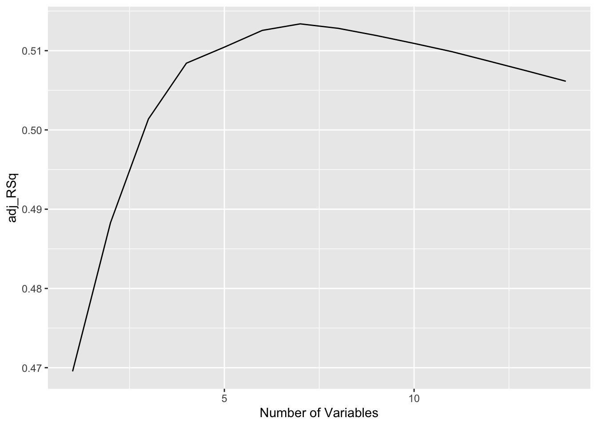

16 Mitme prediktoriga lineaarne regressioon
library(tidyverse)
library(gapminder)
library(rethinking)
library(BayesVarSel)
library(mice)
library(leaps)Vaatame jälle gapminderi andmeid aastast 2007. Meil on võimalik lisada regressioonivõrrandisse lisaprediktoreid. Nüüd ei küsi me enam, kuidas mõjutab l_GDP varieeruvus keskmise eluea varieeruvust vaid: kuidas mõjutavad muutujad l_GDP, continent ja logaritm pop-ist (rahvaarvust) keskmist eluiga. Me modelleerime selle lineaarselt nii, et eeldusena varieeruvad need x-i muutujad üksteisest sõltumatult: \(y = a + b_1x_1 + b_2x_2 + b_3x_3\)
g2007 <- gapminder %>%
filter(year == 2007)
g2007 <- g2007 %>%
mutate(l_GDP = log10(gdpPercap),
l_pop = log10(pop),
lpop_s = (l_pop - mean(l_pop )) / sd(l_pop),
lGDP_s = (l_GDP - mean(l_GDP )) / sd(l_GDP)) %>%
as.data.frame()Sellise mudeli tõlgendus on suhteliselt lihtne:
koef b1 ütleb meile, kui mitme ühiku võrra tõuseb/langeb muutuja y (eluiga) kui muutuja x1 (l_GDP) tõuseb 1 ühiku võrra; tingimusel, et me hoiame kõigi teiste muutujate väärtused konstantsed.
Sarnane definitsioon kehtib ka kõigi teiste prediktorite (x-de) kohta.
Kui meil on mudelis SKP ja pop (rahvaarv), siis saame küsida
kui me juba teame SKP-d, millist ennustuslikku lisaväärtust annab meile ka populatsiooni suuruse teadmine? ja
kui me juba teame populatsiooni suurust, millist lisaväärtust annab meile ka SKP teadmine?
Järgenval mudelil on 4 parameetrit (intercept + 3 betat).
m1 <- lm(lifeExp ~ l_GDP + continent + l_pop, data = g2007)
summary(m1)
#>
#> Call:
#> lm(formula = lifeExp ~ l_GDP + continent + l_pop, data = g2007)
#>
#> Residuals:
#> Min 1Q Median 3Q Max
#> -19.425 -2.246 -0.014 2.468 14.957
#>
#> Coefficients:
#> Estimate Std. Error t value Pr(>|t|)
#> (Intercept) 19.4182 7.4557 2.60 0.0102 *
#> l_GDP 10.6876 1.2378 8.63 1.5e-14 ***
#> continentAmericas 11.6564 1.6929 6.89 2.0e-10 ***
#> continentAsia 10.0521 1.5776 6.37 2.7e-09 ***
#> continentEurope 11.2320 1.9265 5.83 3.9e-08 ***
#> continentOceania 12.8918 4.5493 2.83 0.0053 **
#> l_pop 0.0928 0.8076 0.11 0.9087
#> ---
#> Signif. codes: 0 '***' 0.001 '**' 0.01 '*' 0.05 '.' 0.1 ' ' 1
#>
#> Residual standard error: 5.95 on 135 degrees of freedom
#> Multiple R-squared: 0.767, Adjusted R-squared: 0.757
#> F-statistic: 74.2 on 6 and 135 DF, p-value: <2e-16loeme mudelis “+” märki nagu “või”. Ehk, “eluiga võib olla funktsioon SKP-st või rahvaarvust”.
Intercept 19 ei tähenda tõlgenduslikult midagi. l-GDP tõus ühiku võrra tõstab eluiga 10.7 aasta võrra.
Võrdluseks lihtne mudel
m2 <- lm(lifeExp ~ l_GDP, data = g2007)
summary(m2)
#>
#> Call:
#> lm(formula = lifeExp ~ l_GDP, data = g2007)
#>
#> Residuals:
#> Min 1Q Median 3Q Max
#> -25.95 -2.66 1.22 4.47 13.12
#>
#> Coefficients:
#> Estimate Std. Error t value Pr(>|t|)
#> (Intercept) 4.95 3.86 1.28 0.2
#> l_GDP 16.59 1.02 16.28 <2e-16 ***
#> ---
#> Signif. codes: 0 '***' 0.001 '**' 0.01 '*' 0.05 '.' 0.1 ' ' 1
#>
#> Residual standard error: 7.12 on 140 degrees of freedom
#> Multiple R-squared: 0.654, Adjusted R-squared: 0.652
#> F-statistic: 265 on 1 and 140 DF, p-value: <2e-16Siin on l_GDP mõju suurem, 16.6 aastat. Millisel mudelil on siis õigus? Proovime veel ülejäänud variandid
m3 <- lm(lifeExp ~ l_GDP + continent, data = g2007)
summary( m3 )
#>
#> Call:
#> lm(formula = lifeExp ~ l_GDP + continent, data = g2007)
#>
#> Residuals:
#> Min 1Q Median 3Q Max
#> -19.492 -2.315 -0.043 2.550 14.882
#>
#> Coefficients:
#> Estimate Std. Error t value Pr(>|t|)
#> (Intercept) 20.14 4.03 4.99 1.8e-06 ***
#> l_GDP 10.66 1.21 8.78 6.1e-15 ***
#> continentAmericas 11.69 1.65 7.07 7.5e-11 ***
#> continentAsia 10.11 1.48 6.85 2.3e-10 ***
#> continentEurope 11.27 1.89 5.95 2.1e-08 ***
#> continentOceania 12.93 4.52 2.86 0.0049 **
#> ---
#> Signif. codes: 0 '***' 0.001 '**' 0.01 '*' 0.05 '.' 0.1 ' ' 1
#>
#> Residual standard error: 5.93 on 136 degrees of freedom
#> Multiple R-squared: 0.767, Adjusted R-squared: 0.759
#> F-statistic: 89.7 on 5 and 136 DF, p-value: <2e-16
m4 <- lm(lifeExp ~ l_GDP + l_pop, data = g2007)
AIC(m1, m2, m3, m4)
#> df AIC
#> m1 8 918
#> m2 3 965
#> m3 7 916
#> m4 4 962Võitja mudel on hoopis m3, mis võtab arvesse kontinendi. Siin on l_GDP mõju samuti 10.7 aastat. Lisaks näeme, et kui riik ei asu Aafrikas, siis on l_GDP mõju elueale u 11 aasta võrra suurem. Seega elu Aafrika kisub alla keskmise eluea riigi rikkusest sõltumata. Võib olla on põhjuseks sõjad, võib-olla AIDS ja malaaria, võib-olla midagi muud.
Millise mudeli me peaksime siis avaldama? Vastus on, et need kõik on olulised, et vastata küsimusele, millised faktorid kontrollivad keskmist eluiga? Mudelite võrdlusest näeme, et rahvaarvu mõju elueale on väike või olematu ning et SKP mõju avaldub log skaalas (viitab teatud tüüpi eksponentsiaalsetele protsessidele, kus rikkus tekitab uut rikkust) ning, et Aafrikaga on midagi pahasti ja teistmoodi kui teiste kontinentidega. Aafrikast tasub otsida midagi, mida meie senised mudelid ei kajasta.
Miks ei ole mudeli summary tabelis Aafrikat? Põhjus on tehniline. Kategoorilisi muutujaid, nagu kontinent, vaatab mudel paariviisilises võrdluses, mis tähendab et k erineva tasemega muutujast tekitatakse k - 1 uut muutujat, millest igaühel on kaks taset (0 ja 1). See algne muutuja, mis üle jääb (antud juhul Africa), jääb ilma oma uue muutujata. Me saame teisi uusi kontinendi põhjal tehtud muutujaid tõlgendada selle järgi, kui palju nad erinevad Africa-st.
Miks multivariaatsed mudelid head on?
nad aitavad kontrollida nn kaasnevaid (confounding) muutujaid. Kaasnev muutuja võib olla korreleeritud mõne teise muutujaga, mis meile huvi pakub. See võib nii maskeerida signaali, kui tekitada võlts-signaali, kuni y ja x1 seose suuna muutmiseni välja.
ühel tagajärjel võib olla mitu põhjust.
Isegi kui muutujad ei ole omavahel üldse korreleeritud, võib ühe tähtsus sõltuda teise väärtusest. Näiteks taimed vajavad nii valgust kui vett. Aga kui ühte ei ole, siis pole ka teisel suurt tähtsust.
Mudeldamine standardiseeritud andmetega
Kui me lahutame igast andmepunktist selle muutuja keskväärtuse siis saame 0-le tsentreeritud andmed. Kui me sellisel viisil saadud väärtused omakorda läbi jagame muutuja standardhälbega, siis saame standardiseeritud andmed, mille keskväärtus on null ja SD = 1.
\(Standard.andmed = (x - mean(x))/sd(x)\)
Nii on lihtsam erinevas skaalas muutujaid omavahel võrrelda (1 ühikuline muutus võrdub alati muutusega 1 standardhäve võrra) ja mudeli arvutamine üle mcmc ahelate on ka lihtsam.
m5 <- map2stan(
alist(
lifeExp ~ dnorm( mu , sigma ) ,
mu <- a + b_GDP * lGDP_s + b_pop * lpop_s ,
a ~ dnorm( 0 , 10 ) ,
c(b_GDP, b_pop) ~ dnorm( 0 , 1 ) ,
sigma ~ dunif( 0 , 10 )
), data = g2007 )precis(m5)
#> Mean StdDev lower 0.89 upper 0.89 n_eff Rhat
#> a 66.74 0.64 65.77 67.79 1000 1
#> b_GDP 6.95 0.58 6.06 7.84 775 1
#> b_pop 0.80 0.55 -0.11 1.58 870 1
#> sigma 7.64 0.50 6.82 8.40 876 1kui l_GDP kasvab 1 sd võrra, siis eluiga kasvab 6.9 aasta võrra.
f1 <- glimmer(lifeExp ~ lGDP_s + lpop_s + continent, data = g2007)
#> alist(
#> lifeExp ~ dnorm( mu , sigma ),
#> mu <- Intercept +
#> b_lGDP_s*lGDP_s +
#> b_lpop_s*lpop_s +
#> b_continentAmericas*continentAmericas +
#> b_continentAsia*continentAsia +
#> b_continentEurope*continentEurope +
#> b_continentOceania*continentOceania,
#> Intercept ~ dnorm(0,10),
#> b_lGDP_s ~ dnorm(0,10),
#> b_lpop_s ~ dnorm(0,10),
#> b_continentAmericas ~ dnorm(0,10),
#> b_continentAsia ~ dnorm(0,10),
#> b_continentEurope ~ dnorm(0,10),
#> b_continentOceania ~ dnorm(0,10),
#> sigma ~ dcauchy(0,2)
#> )See on mudeli struktuur, mis sisaldab uusi kategoorilisi muutujaid
Siin on tähtis anda map2stan()-le ette glimmeri poolt eeltöödeldud andmed:
m6 <- map2stan(
f1$f,
data = f1$d)precis(m6)
#> Mean StdDev lower 0.89 upper 0.89 n_eff Rhat
#> Intercept 59.92 0.97 58.31 61.42 344 1
#> b_lGDP_s 6.29 0.68 5.20 7.31 450 1
#> b_lpop_s 0.06 0.50 -0.75 0.79 1000 1
#> b_continentAmericas 11.66 1.53 9.07 13.94 436 1
#> b_continentAsia 10.11 1.47 7.87 12.51 428 1
#> b_continentEurope 11.26 1.83 8.50 14.26 434 1
#> b_continentOceania 11.18 4.00 4.87 17.50 784 1
#> sigma 5.95 0.36 5.38 6.49 931 116.1 Prediktorite valik e milline on parim mudel
Kui me võtame oma mudelisse prediktoreid, mis ei aita märkimisväärselt ennustada y-muutuja väärtusi, siis lisame sellega mudelisse müra ja meie tulemus saab sellest ainult kannatada. Seega tasub enne formaalset mudelit välja visata mõttetud muutujad. Seda püüame nüüd teha kahel meetodil.
Kasutame diabeedi andmeid, kus 403 USA Lõunaosariikide neegril mõõdeti 15 muutujat, mis seostuvad ülekaalu, diabeedi ja teiste kardiovaskulaarsete riskifaktoritega.
Willems JP, Saunders JT, DE Hunt, JB Schorling: Prevalence of coronary heart disease risk factors among rural blacks: A community-based study. Southern Medical Journal 90:814-820; 1997
Schorling JB, Roach J, Siegel M, Baturka N, Hunt DE, Guterbock TM, Stewart HL: A trial of church-based smoking cessation interventions for rural African Americans. Preventive Medicine 26:92-101; 1997.
Kõigepealt bayesi meetodil. Eeldame tavalist mitme prediktoriga iseseisvat (aditiivset) lineaarset regressiooni (ilma interaktsioonideta v mitmetasemeliste mudeliteta).
library(BayesVarSel)
library(mice)
diabetes <- read.csv2("data/diabetes.csv")
imp_d <- mice(diabetes, m = 1, print = FALSE)
diab <- complete(imp_d)
diab_Bvs <- Bvs(formula = hdl ~ chol + stab.glu + ratio + glyhb + age + gender + height + weight + frame + bp.1s + bp.1d+ waist + hip, data = diab)
#> Info. . . .
#> Most complex model has 16 covariates
#> From those 1 is fixed and we should select from the remaining 15
#> chol, stab.glu, ratio, glyhb, age, gendermale, height, weight, framelarge, framemedium, framesmall, bp.1s, bp.1d, waist, hip
#> The problem has a total of 32768 competing models
#> Of these, the 10 most probable (a posteriori) are kept
#> Working on the problem...please wait.library(car)
vif(lm(hdl ~ chol + stab.glu + ratio + glyhb + age + height + weight + bp.1s + bp.1d + waist, data = diab))
#> chol stab.glu ratio glyhb age height weight bp.1s
#> 1.41 2.33 1.51 2.46 1.64 1.20 4.92 2.13
#> bp.1d waist
#> 1.77 4.75summary(diab_Bvs)
#>
#> Call:
#> Bvs(formula = hdl ~ chol + stab.glu + ratio + glyhb + age + gender +
#> height + weight + frame + bp.1s + bp.1d + waist + hip, data = diab)
#>
#> Inclusion Probabilities:
#> Incl.prob. HPM MPM
#> chol 1 * *
#> stab.glu 0.0251
#> ratio 1 * *
#> glyhb 0.0219
#> age 0.0408
#> gendermale 0.0174
#> height 0.0407
#> weight 0.0789
#> framelarge 0.0363
#> framemedium 0.0142
#> framesmall 0.0232
#> bp.1s 0.0159
#> bp.1d 0.0148
#> waist 0.0526
#> hip 0.5531 * *
#> ---
#> Code: HPM stands for Highest posterior Probability Model and
#> MPM for Median Probability Model.
#> Aga mis juhtub, kui me eemaldame muutuja chol?
diab_Bvs2 <- Bvs(formula = hdl ~ stab.glu + ratio + glyhb + age + gender + height + weight + frame + bp.1s + bp.1d+ waist + hip, data = diab)
#> Info. . . .
#> Most complex model has 15 covariates
#> From those 1 is fixed and we should select from the remaining 14
#> stab.glu, ratio, glyhb, age, gendermale, height, weight, framelarge, framemedium, framesmall, bp.1s, bp.1d, waist, hip
#> The problem has a total of 16384 competing models
#> Of these, the 10 most probable (a posteriori) are kept
#> Working on the problem...please wait.
summary(diab_Bvs2)
#>
#> Call:
#> Bvs(formula = hdl ~ stab.glu + ratio + glyhb + age + gender +
#> height + weight + frame + bp.1s + bp.1d + waist + hip, data = diab)
#>
#> Inclusion Probabilities:
#> Incl.prob. HPM MPM
#> stab.glu 0.0628
#> ratio 1 * *
#> glyhb 0.1171
#> age 0.9786 * *
#> gendermale 0.1281
#> height 0.0646
#> weight 0.1586
#> framelarge 0.7031 * *
#> framemedium 0.1226
#> framesmall 0.0848
#> bp.1s 0.0926
#> bp.1d 0.5928 *
#> waist 0.1344
#> hip 0.1737
#> ---
#> Code: HPM stands for Highest posterior Probability Model and
#> MPM for Median Probability Model.
#> Nüüd ilmusid välja lisamuutujad, mis äkki on olulised ja selgu, et vanus on peaaegu sama oluline kui ratio!
Järgneb Hüpoteeside testimine, mis annab Bayesi faktorid (B) nullhüpoteesi suhtes. B=1 tähendab, et kaks hüpoteesi on andmete poolt võrdselt toetatud. B = 100 tähendab, et see hüpotees, mis ei ole H0, on andmete poolt 100 korda rohkem toetatud, kui H0. B = 0.1 tähendab, et hüpotees on 10 korda vähem toetatud kui H0. Bayesi faktor mõõdab tõendusmaterjali (evidence), mis on suhteline mõõt, millega andmed toetavad ühte hüpoteesi rohkem või vähem kui teist hüpoteesi.
H0 on ilma prediktoriteta mudel, mis annab tulemuseks keskmise hdl-i.
fullmodel <- hdl ~ chol + stab.glu + ratio + glyhb + age + gender + height + weight + frame + bp.1s + bp.1d+ waist + hip
reducedmodel <- hdl ~ chol + ratio
reducedmodel2 <- hdl ~ age + ratio + frame
nullmodel <- hdl ~ 1
Btest(models = c(H0 = nullmodel, H1 = fullmodel, H2 = reducedmodel, H3 = reducedmodel2), data = diab)
#> ---------
#> Models:
#> $H0
#> hdl ~ 1
#>
#> $H1
#> hdl ~ chol + stab.glu + ratio + glyhb + age + gender + height +
#> weight + frame + bp.1s + bp.1d + waist + hip
#>
#> $H2
#> hdl ~ chol + ratio
#>
#> $H3
#> hdl ~ age + ratio + frame
#>
#> ---------
#> Bayes factors (expressed in relation to H0)
#> H0.to.H0 H1.to.H0 H2.to.H0 H3.to.H0
#> 1.00e+00 2.06e+131 2.09e+142 1.00e+55
#> ---------
#> Posterior probabilities:
#> H0 H1 H2 H3
#> 0 0 1 0Väga huvitav, chol muutuja eemaldamine (millest ma kahtlustan, et see on osaliselt(?) redundantne ratio muutujaga) langetas Bayesi faktorit meeletult.
sageduslik alternatiiv muutujate valimisele:
library(leaps)
regfit.full<- regsubsets(hdl ~ stab.glu + ratio + glyhb + age + gender + height + weight + frame + bp.1s + bp.1d+ waist + hip, data = diab, nvmax=19, method="backward")
reg.summary<-summary(regfit.full)
regs <- data.frame(adj_RSq = reg.summary$adjr2)
ggplot(regs) + geom_line(aes(x=1:nrow(regs), y = adj_RSq)) + xlab("Number of Variables")
Peale 2. muutuja lisamist jääb adjusteeritud r-ruut stabiilseks. Seega piisab kahest muutujast.
reg.summary$adjr2
#> [1] 0.469 0.487 0.500 0.507 0.509 0.512 0.513 0.512 0.511 0.510 0.509
#> [12] 0.508 0.507 0.505summary(regfit.full)
#> Subset selection object
#> Call: regsubsets.formula(hdl ~ stab.glu + ratio + glyhb + age + gender +
#> height + weight + frame + bp.1s + bp.1d + waist + hip, data = diab,
#> nvmax = 19, method = "backward")
#> 14 Variables (and intercept)
#> Forced in Forced out
#> stab.glu FALSE FALSE
#> ratio FALSE FALSE
#> glyhb FALSE FALSE
#> age FALSE FALSE
#> gendermale FALSE FALSE
#> height FALSE FALSE
#> weight FALSE FALSE
#> framelarge FALSE FALSE
#> framemedium FALSE FALSE
#> framesmall FALSE FALSE
#> bp.1s FALSE FALSE
#> bp.1d FALSE FALSE
#> waist FALSE FALSE
#> hip FALSE FALSE
#> 1 subsets of each size up to 14
#> Selection Algorithm: backward
#> stab.glu ratio glyhb age gendermale height weight framelarge
#> 1 ( 1 ) " " "*" " " " " " " " " " " " "
#> 2 ( 1 ) " " "*" " " "*" " " " " " " " "
#> 3 ( 1 ) " " "*" " " "*" " " " " " " "*"
#> 4 ( 1 ) " " "*" " " "*" " " " " " " "*"
#> 5 ( 1 ) " " "*" " " "*" " " " " " " "*"
#> 6 ( 1 ) " " "*" " " "*" "*" " " " " "*"
#> 7 ( 1 ) " " "*" "*" "*" "*" " " " " "*"
#> 8 ( 1 ) "*" "*" "*" "*" "*" " " " " "*"
#> 9 ( 1 ) "*" "*" "*" "*" "*" " " "*" "*"
#> 10 ( 1 ) "*" "*" "*" "*" "*" "*" "*" "*"
#> 11 ( 1 ) "*" "*" "*" "*" "*" "*" "*" "*"
#> 12 ( 1 ) "*" "*" "*" "*" "*" "*" "*" "*"
#> 13 ( 1 ) "*" "*" "*" "*" "*" "*" "*" "*"
#> 14 ( 1 ) "*" "*" "*" "*" "*" "*" "*" "*"
#> framemedium framesmall bp.1s bp.1d waist hip
#> 1 ( 1 ) " " " " " " " " " " " "
#> 2 ( 1 ) " " " " " " " " " " " "
#> 3 ( 1 ) " " " " " " " " " " " "
#> 4 ( 1 ) " " " " " " "*" " " " "
#> 5 ( 1 ) " " " " " " "*" " " "*"
#> 6 ( 1 ) " " " " " " "*" " " "*"
#> 7 ( 1 ) " " " " " " "*" " " "*"
#> 8 ( 1 ) " " " " " " "*" " " "*"
#> 9 ( 1 ) " " " " " " "*" " " "*"
#> 10 ( 1 ) " " " " " " "*" " " "*"
#> 11 ( 1 ) "*" " " " " "*" " " "*"
#> 12 ( 1 ) "*" " " "*" "*" " " "*"
#> 13 ( 1 ) "*" "*" "*" "*" " " "*"
#> 14 ( 1 ) "*" "*" "*" "*" "*" "*"